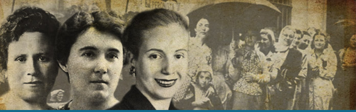
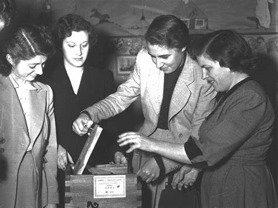

El 11 de noviembre de 1951, las mujeres argentinas votaron por primera vez, luego de que en septiembre de 1947 se aprobara la ley 13.010. Fue un camino largo.
Desde fines del siglo XIX las mujeres argentinas venían luchando por la obtención de sus derechos cívicos. Cecilia Grierson, aquella notable mujer que había decidido estudiar medicina para curar a su amiga Amalia Koenig que padecía una enfermedad que por entonces era incurable, transformándose en la primera mujer que pudo graduarse como médica en 1889, participó en aquel mismo año en Londres del Segundo Congreso Internacional de Mujeres y en septiembre de 1900 fundó el Consejo de Mujeres. En 1907 la socialista Alicia Moreau de Justo creó el Comité Pro-Sufragio Femenino.  Estos impulsos influyeron decididamente para que en mayo de 1910, en pleno centenario, Buenos Aires fuera elegida como sede del Primer Congreso Femenino Internacional con la participación de delegadas chilenas, uruguayas y paraguayas donde se reclamó enérgicamente el derecho de las mujeres a votar. Otra de las pioneras fue Julieta Lanteri quien tras un sonado juicio logró su carta de ciudadanía y que se la inscribiera en el padrón municipal en 1911. Se convirtió en la primera mujer de toda Sudamérica en ejercer el derecho al voto en las elecciones municipales celebradas el 26 de noviembre de aquel año. En marzo de 1919 lanzó su candidatura a diputada nacional por la Unión Feminista Nacional y contó con el apoyo de Alicia Moreau de Justo y Elvira Rawson. El resultado fue magro pero importante simbólicamente: obtuvo 1.730 votos.
En 1911 el diputado socialista Alfredo Palacios había presentado el primer proyecto de ley de voto femenino en el Parlamento Nacional, faltaba aún un año para que se sancionara la Ley electoral conocida como Ley Sáenz Peña de voto secreto, universal (o sea masculino en el lenguaje político de la época) y obligatorio. El proyecto de Palacios ni siquiera fue tratado sobre tablas. Las mujeres eran consideradas incapaces por el Código Civil de 1871. Recién en 1926, por la Ley 11.357 alcanzaron la igualdad legal con los varones aunque esa igualdad, que estaba muy lejos de ser respetada en los hechos, era tan relativa que no incluía el derecho al voto ni la patria potestad compartida.
Gracias al impulso de Aldo Cantoni, las mujeres sanjuaninas se convirtieron en abril de 1928 en las primeras en votar en todo el país.
En 1929, un compañero de ideas de Palacios, Mario Bravo presentó un nuevo proyecto que dormiría –golpe de Estado mediante- el sueño de los justos en los cajones de la cámara por tres años hasta que pudo ser debatido a comienzos de septiembre de 1932. En apoyo a la ley llegaron al Parlamento 95.000 boletas electorales firmadas por otras tantas mujeres de todo el país con la siguiente consigna: “Creo en la conveniencia del voto consciente de la mujer, mayor de edad y argentina. Me comprometo a propender a su mayor cultura”. Pocos días después, el 17 de septiembre, la Cámara Baja le daba media sanción a la ley propuesta por el diputado socialista Mario Bravo que facultaba a las mujeres para votar.  Durante el debate el diputado derechista Bustillo pidió el voto calificado para la mujer en medio del abucheo generalizado de cientos de señoras y señoritas que colmaban los palcos del parlamento, mientras que el socialista Ruggieri, celebraba, en medio del aplauso de las damas presentes “la coincidencia de todos los sectores en el deseo de libertar a la mitad del pueblo argentino, la parte más delicada y sufrida, y la más oprimida, dándole participación directa en nuestras luchas cívicas” 1. El legislador ultra conservador Uriburu, se opuso en estos cavernícolas términos al proyecto: “Cuando veamos a la mujer parada sobre una mesa o en la murga ruidosa de las manifestaciones, habrá perdido todo su encanto. El día que la señora sea conservadora; la cocinera, socialista, y la mucama, socialista independiente, habremos creado el caos en el hogar”. 2
La Ley no pudo pasar esa defensa infranqueable del pensamiento retrógrado que era el Senado argentino de los años 30. Pero la bancada socialista, la que más hizo por la concreción del voto femenino a lo largo de nuestra historia, acompañada por el impulso de la mujer del fundador del Partido, Alicia Moreau de Justo, insistió sin éxito con proyectos presentados por el diputado Palacios en 1935 y 1938. Este último fue apoyado por una declaración de la Unión de Mujeres Argentinas, firmada por Susana Larguía y Victoria Ocampo.
Desde aquel proyecto de Palacios de 1911 se presentaron otras 22 iniciativas legislativas hasta que el 9 de septiembre de 1947 pudo sancionarse finalmente la ley 13.010 que establecía en su primer artículo:” Las mujeres argentinas tendrán los mismos derechos políticos y estarán sujetas a las mismas obligaciones que les acuerdan o imponen las leyes a los varones argentinos.”
El 23 de septiembre Evita debutó como oradora en el balcón de la Casa Rosada, lo haría para hablar ante una multitud convocada por la CGT que celebraba la obtención el voto femenino. Comenzaba a sonar estridente y metalizada por los altavoces, aquella voz enérgica que quedaría para siempre en el recuerdo de todos los argentinos, los que la amaban y los que la odiaban. Aquella voz inconfundible dijo entonces: “Mujeres de mi patria: recibo en este instante de manos del gobierno de la Nación la ley que consagra nuestros derechos cívicos.” Y remarcó que se trataba de una “...victoria de la mujer sobre las incomprensiones, las negaciones y los intereses creados de las castas repudiadas por nuestro despertar nacional”. 3
Lejos de alegrarse las dirigentes opositoras de todo el arco político desde la izquierda a la derecha, que venían luchando por lograr el voto femenino y la total integración de la mujer a la política, sintieron que Evita les arrebataba una reivindicación histórica y una anhelada conquista.
Referencias:
1Revista ¿Qué? , 29 de agosto de 1946
2Revista ¿Qué? , 29 de agosto de 1946
3Diario “Democracia”, Buenos Aires, 24 de septiembre de 1947.
Fuente: www.elhistoriador.com.ar